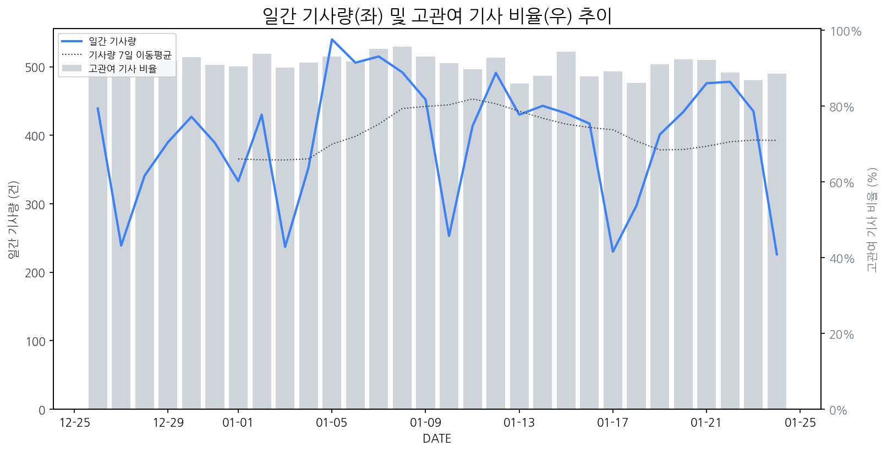

1
시장 활동 지표
기사량 추세 & 이상 징후 탐지
시장의 '전체 기사량'이 평소보다 비정상적으로 급증했는지(Spike)를 차트로 확인하고, LLM이 분석한 급등의 핵심 원인을 파악할 수 있음

고관여 기사란? 산업 연관 키워드로 수집된 기사들 중 디스플레이 키워드에 가중치를 반영하여 도출된 관련성 높은 기사
수집된 기사 수 (2026-01-24)
226
-2% WoW
기사량 변동 수준 (7일 이동평균 대비)
±6.7% 이하
2
오늘의 키워드
급격한 관심 ↑, 주목해야 할 키워드
금일 유의미한 급등 신호는 포착되지 않았습니다.
3
실시간 Risk 키워드
경계해야 할 시그널 탐지
특정 토픽의 부정 감성 점수가 급등할 때 이를 즉시 탐지하고, "근거 기사" 링크를 통해 리스크의 실체를 빠르게 파악할 수 있음
키워드 분석 결과, 오늘은 걱정할 만한 하락 신호가 없습니다. (부정 언급량 변화: +1.5σ 이내)
4
주요 이벤트 모니터링
실시간 산업 동향 파악을 위한 주요 활동
최근 발생한 주요 기업들의 신제품 출시, 투자 등 주요 이벤트를 제공하여 매일 경쟁사 동향을 확인할 수 있음
나노팀, 유일에너테크, 엠케이전자, 지아이텍 등 2차전지 관련 기업들의 주가가 상승세를 보이고 있다. 이는 2차전지 시장의 긍정적인 전망을 반영하는 것으로 분석된다.
Impact
2차전지 기술 및 소재 기업들의 경쟁력 강화와 디스플레이 산업의 2차전지 탑재 확대 가능성이 높아질 수 있다.
Next Step
2차전지 기술 동향을 면밀히 파악하고, 디스플레이와의 융합 가능성을 탐색하여 신규 사업 기회를 모색해야 한다.
이번 이벤트는 샤오미 스마트폰과 소니 이어폰 등 다양한 IT 기기에 대한 할인 및 프로모션을 포함하고 있습니다. 특히 가성비 스마트폰과 러닝족을 위한 이어폰에 초점을 맞추고 있습니다.
Impact
이는 스마트폰 및 음향기기 시장에서의 경쟁 심화를 유발하며, 특히 중저가 디스플레이 패널을 탑재한 스마트폰의 판매 증진에 영향을 줄 수 있습니다.
Next Step
디스플레이 제조 기업은 경쟁력 있는 가격과 성능을 갖춘 패널 공급을 강화하고, 스마트폰 제조사와의 긴밀한 협력을 통해 신규 수요 창출을 모색해야 합니다.
TSMC의 생산 능력 한계가 드러나면서, 삼성전자 파운드리가 대안으로 부상하고 있습니다. 이는 칩 생산 병목 현상을 심화시키고 관련 산업의 공급망 재편 가능성을 시사합니다.
Impact
디스플레이 패널 제조에 필요한 핵심 반도체 칩의 공급 불안정성이 야기되어, 신제품 출시 지연 및 생산 비용 상승으로 이어질 수 있습니다.
Next Step
삼성전자 파운드리 부문과의 전략적 파트너십 강화 및 대체 칩 공급선 확보를 위한 다각적인 검토가 필요합니다.
5
지금 주목해야 할 뉴스 TOP 3
전기차 관련주, '어깨춤 으쓱으쓱' 유일에너테크·나노팀·KEC... '시무룩...
로컬 요약 모델 실행 중 오류 발생: 제목을 클릭하여 기사 전문을 확인할 수 있습니다.
TSMC 생산 캐파 한계 노출… 대안으로 삼성전자 파운드리 주목
TSMC의 생산 라인이 포화 상태에 이르면서 TSMC의 2나노 공정에 주문이 급증하면서 가격 인상이 이어지고 있고, 이에 따라 글로벌 빅테크 기업들이 공급망 다변화를 위해 삼성전자 파운드리 사업부로 관심을 돌리고 있다는 분석이 나왔다.
소니·TCL 손잡자 흔들리는 왕좌, 삼성·LG 'TV 1위' 위기
소니와과 TCL이 TV 사업부문 합작 법인을 설립하기로 하면서 글로벌 TV 시장에서 삼성전자와 LG전자의 위기감이 커지고 있는 가운데, 소니의 프리미엄 브랜드·기술과 TCL의 저가 경쟁력·패널 공급망을 결합해 프리미엄 시장에 본격 진출하면서, 삼성·LG가 주도하던 OLED 및 프리미엄 TV 시장 판도를 흔들 수 있다는 전망이 나온다.